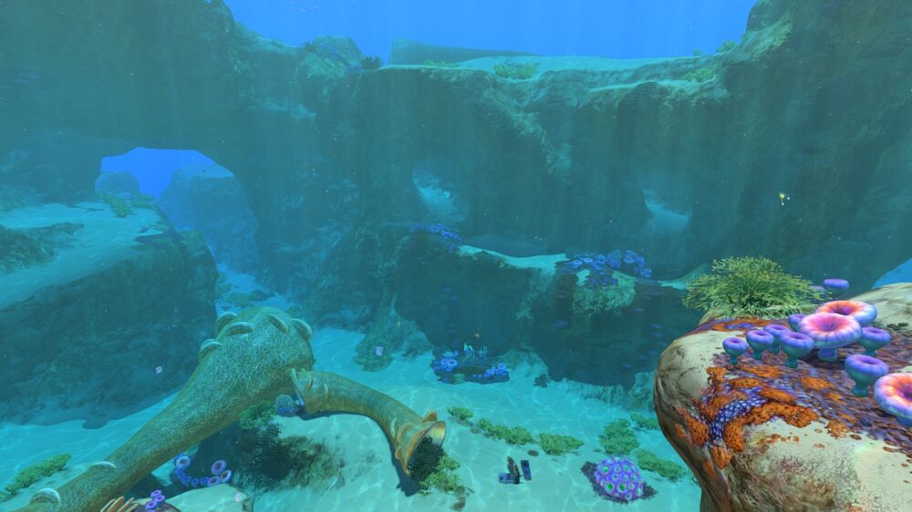
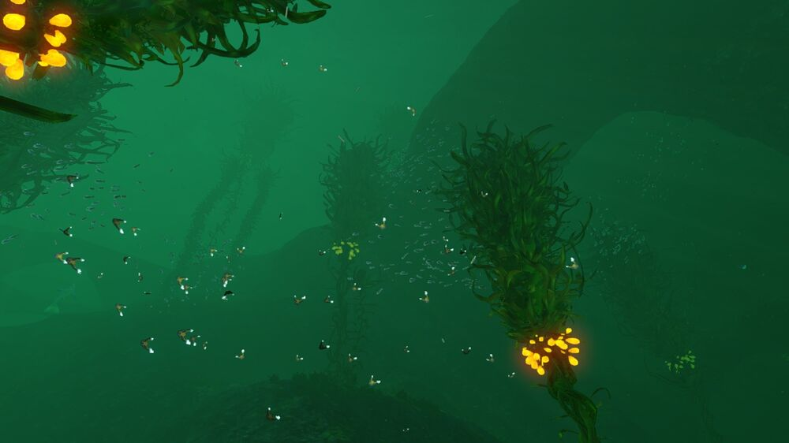
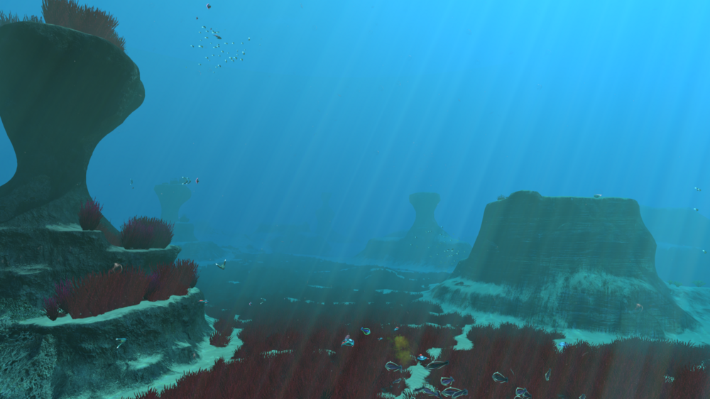
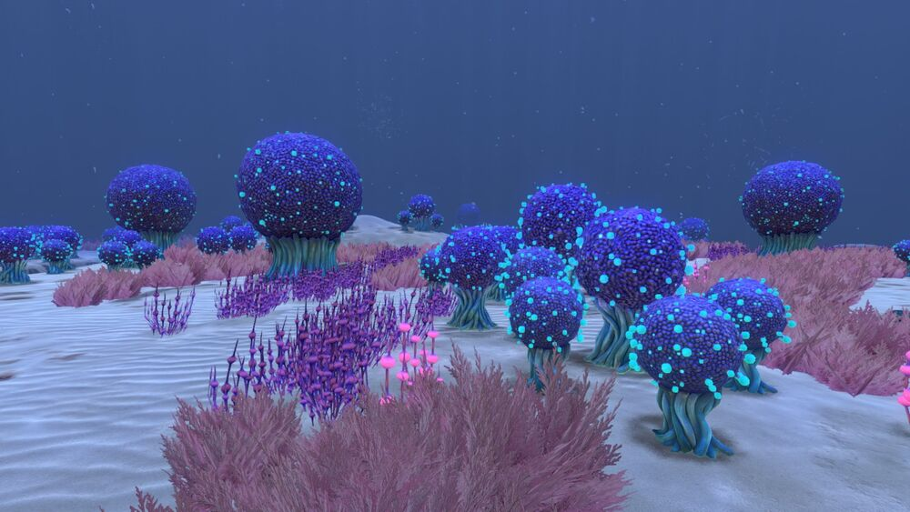
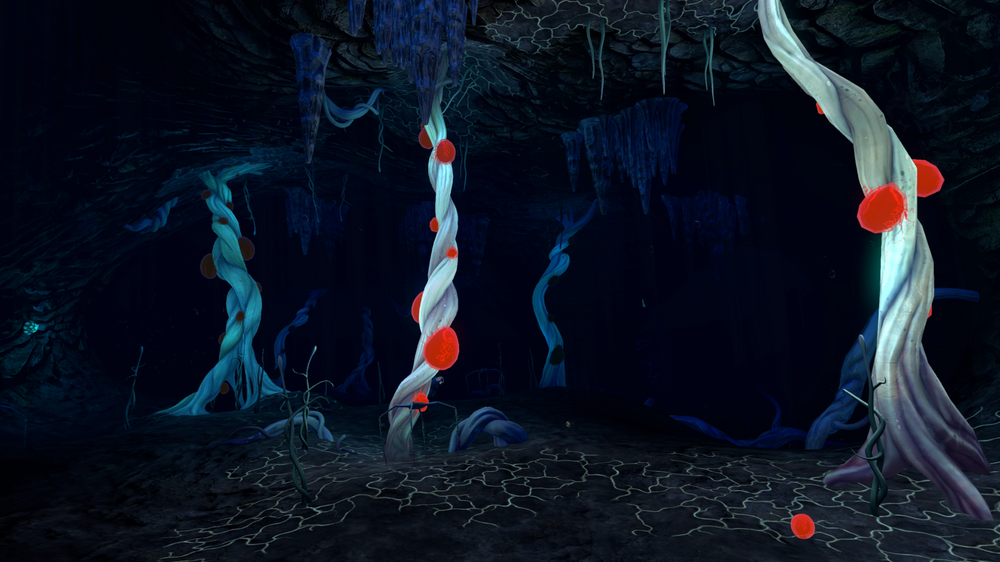
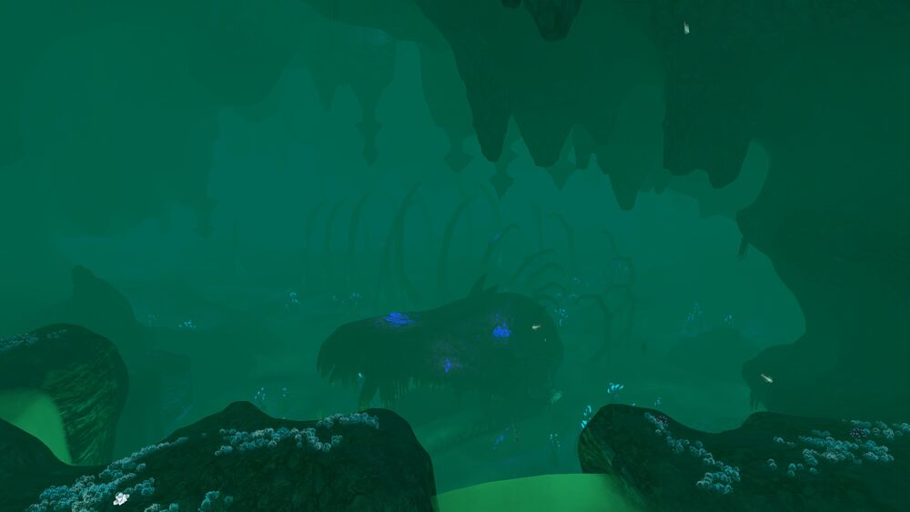
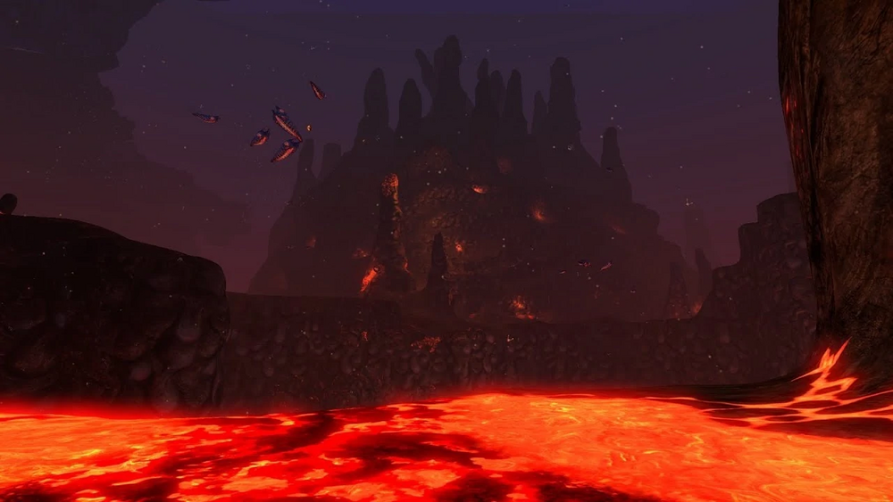
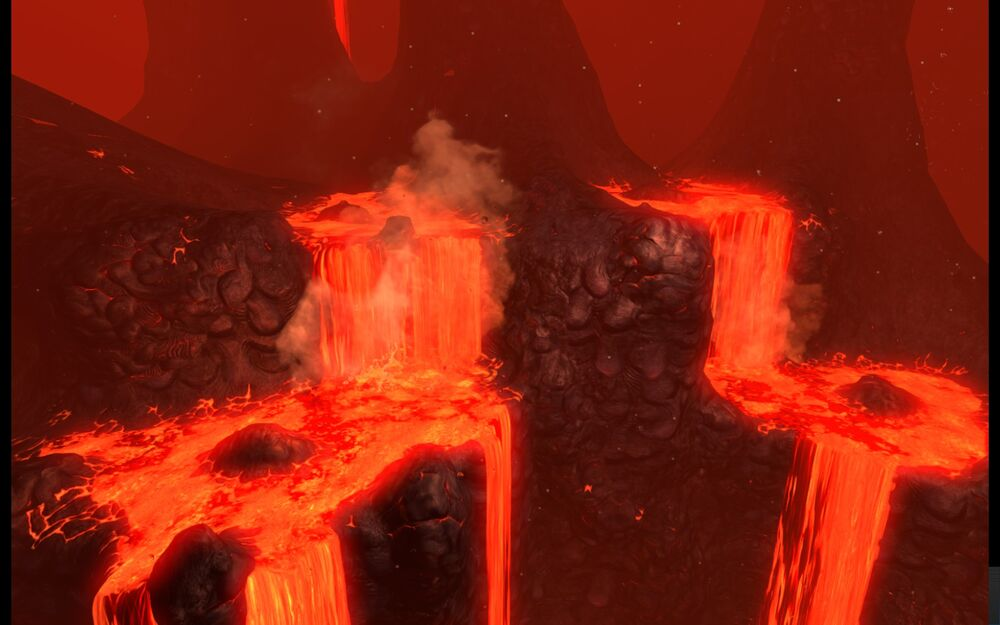

| Биом |
Краткое описание |
Глубина |
Описание |
Скриншоты |
|
То самое место, куда падает спасательная капсула. Здесь нет хищников и много съедобной рыбы. Идеальное место, для постройки начальной базы. |
0 - 80 м |
Безопасные отмели (Safe Shallows) — это стартовая точка Subnautica, биом, в котором приводнилась спасательная капсула №5 с Райли Робинсоном на борту. Безопасные отмели находятся в самом центре Кратера, к западу от «Авроры». Большая часть территории Безопасных отмелей покрыта коралловыми рифами, есть входы в небольшие пещерные системы.
Как следует из названия, этот биом является одним из самых безопасных в игре. Однако, всё же существует несколько опасных факторов: стоит избегать газобрюхов и камикадзе в пещерах. Помимо этого, в поисках металлолома из Лесов водорослей на Безопасные отмели часто заплывают сталкеры. Есть небольшая вероятность, что в погоне за добычей сюда могут наведаться песчаные акулы из Травяных плато. |
 |
|
Единственное место произрастания гигантских Водорослей, у которых есть много полезных применений. Но зона не безопасна, здесь много Сталкеров. Также очень много металлолома. |
25 - 150 м |
В настоящее время на карте есть пять Лесов водорослей. Они расположены на небольшой глубине и содержат в основном пассивные формы жизни, за исключением сталкеров, кровопускателей и висячих жал. Морское дно главным образом мшистое и песчаное; ландшафт состоит из травянистых холмов, каньонов и арок, иногда указывающих на входы в небольшие пещерные системы.
На средней глубине находится большая часть ресурсов, а также Выступ известняка и Выступ песчаника. Грозди семян, растущие на водорослях, не только обеспечивают светлый и красивый ночной пейзаж, но также нужны для создания смазки и силиконовой резины. В Лесу водорослей находится большое количество металлолома, который можно использовать не только как сырьё для производства титана, но и в качестве «игрушек» для сталкеров для обновления их зубов. |
 |
|
Песчаные равнины, поросшие красной травой. Основное место обитания Песчаных акул. Идеальное место для постройки базы за счёт обилия ровных поверхностей. |
50 - 150 м |
Травяные плато характеризуются гладкими морскими равнинами и песчаной местностью, почти полностью покрытой кровавой травой, дающей Плато их отличительное имя. Ещё одна отличительная особенность биома — высокие структуры, напоминающие столбы, которые возникли, по-видимому, в результате эрозии. При изучении Травяных плато рекомендуется держаться подальше от больших групп кусак и подозрительных песчаных облаков, так как песчаные акулы хорошо распространены в этом биоме. Шипомёты — ещё один вид опасности, который можно найти в пещерах биома. |
 |
|
Здесь растут кусты необычного цвета и формы, из-за которых биом и получил своё название. Биом опасный, много Костяных акул и Электрических угрей. |
140 - 480 м |
Зона «Куш» находится на песчаной местности со множеством расселин и выступов. В ней изобилуют бурые водоросли и растения синего или фиолетового окраса, особенно клубнекуст.
Из-за близости к Зоне крушения, южная часть Зоны «Куш» подвержена воздействию радиации. Если игрок не отремонтировал реактор «Авроры», то для его исследования понадобится противорадиационный костюм.
В этом биоме есть несколько лавовых гейзеров. Это, вместе с Пещерами Зоны «Куш», предполагает небольшую вулканическую активность в Зоне.
На границе с Горами есть вход в Затерянную реку, ведущий к Горному коридору.
|
 |
|
Жуткий глубоководный океанический дендрарий, где обитают Кальмаро-крабы, Электрическиt угри, Губители и Стражи. В северной зоне обитает Призрачный левиафан, но тут находятся 2 входа в Затерянную реку. |
150 - 630 м |
Этот биом представляет из себя одну глубокую расщелину с естественными скальными мостиками, простирающимися от одной стены до другой и небольшой пещерной системой, расположенной ниже масляных водорослей, где они обнажают свои корни. В этой области можно найти один из обломков «Авроры», застрявший между стенами впадины. Эту Зону почти невозможно исследовать с «Циклопом» из-за узости расщелины.
В этом биоме находится 2 прохода, ведущих к Затерянной реке
|
 |
|
Затерянная река — уникальный пещерный биом. Это большая холодная система пещер, расположенная глубоко под поверхностью. |
550 - 1100 м |
Затерянная река, как правило, мрачная и туманная, с ярко выраженным зеленоватым оттенком воды. Освещается подводными соляными озёрами . Биом наполнен жуткой атмосферой, сопровождаемой криками призрачных скатов. Подводные соляные озёра покрывают почти всё дно пещер. Озёра, расположенные в большей части пещерной системы могут нанести Мотыльку или игроку урон, но костюму «КРАБ» они урона не наносят. Озёра из Древесной бухты безопасны. Очень богата на самые разнообразные ресурсные залежи: имеет практически все минералы, представленные в игре, что делает её удобным местом для строительства базы.
Центр исследования болезни расположен в затерянной реке внутри пещеры, вход в которую находится чуть дальше Развилки. Выход, ведущий к ЦИБ помечен инопланетными столбами.
|
 |
|
Преддверие «ада», эта зона разделяет спокойные воды и кипящие лавовые реки Активной лавовой зоны. Из обитателей — Лавовые ящерицы и Лавовые личинки. В центре пещерной системы находится Лавовый замок, охраняемый двумя Драконами. |
600 - 1300 м |
Лавовая зона достаточно обширная. Она представляет собой пещеру, в центре которой находится интересное геологическое образование — «Лавовый замок». В пещере есть множество вялотекущих лавовых рек и озёр, можно наблюдать процессы выбрасывания магмы из недр планеты. С потолка и выступов в стенах пещеры также течёт лава.
В пещере и в коридорах обитают "лавовые" подвиды обычных съедобных рыб с поверхности. Это красноглазик и магмаранг. А также характерные для биома животные лавовые личинки и лавовые ящерицы. В главной пещере обитает два морских дракона. Оба находятся по обе стороны от «Лавового замка» тем самым как бы охраняя входы внутрь пещерной системы.
Из Неактивной лавовой зоны есть также два прохода в Активную лавовую зону: лавовая яма и лавовые водопады.
Одно из мест, где выгодно построить перевалочную базу с использованием энергии от теплоэлектростанций.
|
 |
|
Самое горячее место в игре. Здесь из мантии планеты изливается раскалённая лава. Тут обитают Лавовые ящерицы, Лавовые личинки и Морской дракон-левиафан. |
1300 - 1500 м |
Лавовая зона представляет собой достаточно обширную пещеру, большую часть дна которой занимает расплавленная порода. Лава также стекает с потолка и выступов в стенах пещеры. В нее существует два входа, оба находятся в Неактивной лавовой зоне: лавовая яма (lava pit) и лавовые водопады (lava falls). Здесь находится один из инопланетных тайников. Исследовать активную лавовую зону лучше на транспорте, ибо огромная температура и множество опасных монстров могут убить игрока в момент. Но и на Циклопе вы не будете в полной безопасности, т.к. Лавовые личинки могут достаточно быстро высосать из него энергию, а Морской дракон-левиафан может превратить его в металлолом.
Здесь находится Главный изоляционный комплекс – самая большая инопланетная база, где содержится Морской император.
|
 |